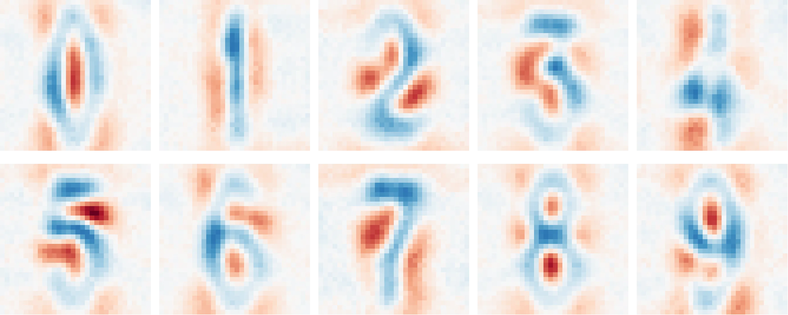

Introduction
This book serves as an informal tutorial to \(\chi\)-nets, a natively decomposable and interpretable family of neural networks. These networks replace ordinary activation functions with compositional counterparts, making them analytically transparent while retaining their expressiveness. This also enables exact computation of interactions between any part of the model.

The above image depicts salient interactions between inputs and output of a multi-layer image model.1 These images are extracted from the weights alone, requiring no input dataset or extra information. Compositional networks make several open problems in interpretability tractable.
Directly interpreting weights
Input-based (activation-based) interpretability might miss important behaviour a model has learned, even when considering the full training dataset. Hence, they cannot be used to make important guarantees about what a model knows and doesn't.
Analysing the weights directly provides a comprehensive view into model internals without relying on potentially unrepresentative inputs.
Globally decomposing models
It's impossible to describe how changing a given subspace, either in the activations or weights, impacts an ordinary model. Extracted features, either with supervised (probes) or unsupervised (dictionary learning) techniques, have no guarantees about their utility downstream. This means a combination of ablations and qualitative analysis is required to understand what a feature does.
For compositional networks, the downstream impact for any feature can be computed exactly. This can be used to order subspaces in the weights by global importance, just like SVD does for a linear model.
Summary
In short, many metrics become tractable (and even fast) to compute. While this can be used toward deep learning science, this book focusses on their interpretability. We refer to such methods under the umbrella name of 'compositional interpretability'.
-
Specifically, this is a 3-layer model trained on the street-view house number (SVHN) dataset. ↩
Introduction
Who is this book for?
This book is aimed primarily at (mechanistic) interpretability researchers. It serves as an informal tutorial to compositional interpretability.
Familiarity with the following topics is assumed.
- Linear algebra, specifically matrix decompositions
- Deep learning, specifically architecture design
- Common interpretability techniques and challenges
While the book should be accessible without any of the above, it will require some googling.
This book is in beta and may have a somewhat steep learning curve. For instance, lots of notation is required to properly understand the used methods. We're actively looking for feedback on how to improve this.
What to expect from this book?
This book roughly consists of 3 parts.
- Combining the advantages of tensor networks and neural networks
- Leveraging compositionality in tensor networks toward interpretability
- Experimenting on real-world models to find interesting mechanisms
The book is design with sequential reading in mind (and less as a lookup table).
We believe most topics provide a fresh perspective, even for readers familiar with the subject.
Some reading tips
This book natively supports different themes, selectable via the brush icon on the top-left.
The authors recommend trying the 'Rust' theme, as it reduces visual strain.
Motivation
Why composition matters
Standard activation functions (such as ReLU, Sigmoid, etc.) are inherently non-compositional. Consider any set of input features that activates an output: ablating any of them could ‘switch off’ the ReLU. Each feature depends on the others; subsets of the input cannot be considered separately as this changes the outputs unrecoverably. Examining these activation functions thus requires the whole input. Consequently, weights cannot be meaningfully decomposed and circuits cannot be generally understood.1 In other words, non-compositional activation functions shroud the high-level relation between inputs, outputs and weights. This is why adequately describing feature interactions has remained an open problem in interpretability.
Compositional activation functions
Fortunately, there exist compositional activation functions. Consider a linear layer followed by a squared activation function --- the simplest non-linear polynomial --- written as \( (A x)^2 \). We denote a single output as \( (a^T x)^2 \) where \(x\) is the input, and \(a\) is a matrix row for that output. This can be rewritten as follows:
\[ (a^T x)^2 = (a^T x)^T (a^T x) = (x^T a) (a^T x) = x^T (a a^T) x = x^T Q x \]
In other words, the square can be seen as an element-wise product between duplicated activations. This can rearranged into a single matrix \(Q\) (created by the outer product of \(a\) with itself) that defines how the outputs are created from a duplicated \(x\). Each entry in \(Q\) describes the interaction strength between any pair of input features. Notably, the output is precisely the sum of all weighted pairwise interactions. This means a given interaction will always be present (on different scales according to the input) and cannot be suppressed. A squared activation function’s feature composition is meaningful and can be described precisely.
Formally, pairwise interactions form a linear basis for this activation function, which can be studied with well-known tools like SVD. This stack of interaction matrices can be seen as a third-order tensor, which describes a given layer exactly (and nicely). This clarifies why composition is helpful for interaction-based interpretability.
Generalising composition using tensors
The quadratic activation can be generalised by allowing asymmetric interactions \((x^T a) (b^T x)\).
This is called a bilinear layer and is an important building block for the remainder of this book.
Bilinear layers are compositional and on par with common MLP layers, even in large transformers.
This raises the question: "what makes a layer compositional, for our purposes?"
The answer is simple: "everything that is describable by a tensor."
The next section dives into what this means and how this can be used toward architectural design.
Caveats
All proposed architectures are designed to incur minimal modifications and retain maximal accuracy. Despite this effort, it is impossible to guarantee these changes generalise accordingly across tasks. For instance, all transformer modifications have been tested up to GPT2 sized models and generally achieves loss parity. However, this may change at the largest of sizes or for specific tasks that weren't considered here.
One instance in which the proposed architectures perform worse are low-data settings. Iterating over many epochs saturates our models quicker, while ReLU-based counterparts continue improving.
-
I am talking in a theoretic sense. In practice, some parts of ReLU-based networks contain near-decomposable structures that can be approximated well. However, we want to be able to analyse the parts of the networks that don't follow this pattern. ↩
Tensor Networks
Matrices can be seen as a map between one space to another. Tensors generalise this by mapping between an arbitrary number of spaces.
For instance, a matrix may encode a graph, translating between source -> target.
A time-dependent graph time, source -> target can be described by a tensor.
Tensors can be seen as high-dimensional cubes, where each side is called an index (sometimes called mode). The amount of indices is called the order of the tensor.
Unfortunately, the number of parameters in a tensor grows exponentially in its order. This makes is intractable to work with tensors for many non-trivial problems.
Factorising tensors into networks
Despite only being quadratic in parameter count, it can be impractical to work with huge matrices. A common solution is to factorise or decompose these into something that is easier to work with. For instance, such a matrix \(X\) can be approximated using two lower rank parts \(X \approx A B\).
There exist several generalisations to tensors, all of which can be described by tensor networks. Tensor networks are graphs, where each node, or box, represents a tensor and each edge, or wire, represents how tensors are connected. Unlike an ordinary graph, tensor networks can have unconnected edges that represent unconnected indices (inputs/outputs). This graphical notation is really useful to understand what kind of structure the described tensor has.
Tensors instantiated by deep neural networks are laughably huge -- over thousand orders. However, these can be studied efficiently anyway as highly structured tensor networks.
Introduction to tensor diagrams
This following introduces the tensor diagram notation, focussing on common intuitions.1
A matrix is denoted as a box.
It has an input and an output wire.
These can be named for clarity.
A vector is also a box but only has a single wire.
We don't distinguish between input or output vectors for simplicity.
A vector-matrix multiplication connects them.
A matrix multiplication connects two matrices.
It contracts away the hidden dimension.
Transposing matrices changes the order of input and output. This corresponds to a vertical reflection of the diagram (hence the nook).
(Flattened) Matrices can represent a connection between inputs, just like in the attention mechanism. This shows why one side should be transposed.
Special matrix structure can be conveyed through diagrams. This is the identity matrix. It doesn't do anything to the input.
A diagonal matrix is written as an identity matrix, element-wise multiplied by a vector.
In this case, the multiplication is denoted as a black circle.
When an isometric (think orthogonal) matrix is multiplied with its transpose it equals the identity. We indicate such matrices with a border.
Diagrammatic equations are a powerful tool to simplify and analyse tensor networks. We write the SVD of a matrix as such.
The number of free/open wires indicate the order of the tensor. This box represents a dense third-order tensor.
There exist other ways in which to instantiate tensors that may be more efficient. This is a diagram of a bilinear layer.
Mathematical meaning
Diagrams are useful because they convey an intuitive overview of the structure of networks. However, they can also be used to understand gritty details of specific contractions.
In these diagrams, boxes are tensors, but what are wires and what does it mean to connect them? Wires represent a sum of over basis vectors, for example, zero vectors with 1 at entry \(i\).
Hence, connections indicate that some index of a matrix is the same (and should be summed).
Following this, diagrams can be converted to Einstein notation, as encountered in einsums.
Diagrammatic reasoning
Becoming fluent in tensor networks takes time and practice; some seemingly simple have non-trivial interpretations. However, these diagrams allow us to spatially reason about tensor operations in a way other mathematical tools don't. They are not merely a visualisation tool, they are a formal language over tensor networks. Diagrams can be seen as formulae, between which equalities can holds (as illustrated in the SVD example).
The following are a few examples of specific networks with a well-known meaning. Try to interpret what each diagram represents.
Hint
Connecting both sides of the same matrix implies taking a sum over equal indices.Solution
The trace of A. \(\left(\sum_i A_{ii}\right)\)
Hint
This diagram can be seen as the trace of A multiplied with itself.Solution
The Frobenius norm of matrix A. \(\left(\sum_{ij} A_{ij}A_{ij}\right)\)
Hint
Both sides perform an element-wise multiplication instead of an inner product.Solution
The element-wise multiplication of matrix entries in A and B.Hint
Unconnected sub-networks represent a (tensor) product.Solution
A partial identity, scaled by the inner product of V and the second input.-
This notation often varies throughout the literature. While the underlying meaning is formal, the notation itself is often intuitive. The used diagrams are inspired by (Coecke and Kissinger, 2018) ↩
Summary
While many feature-first interpretability methods exists; their formation and effect isn't understood well. We argue that compositional layers, rooted in (self-)multiplication, can overcome this. Any such compositional layer is describable by a tensor, potentially operating on copies of the input. For efficiency, these tensors are instantiated by structured connections, described by a network.
Tensor networks define how higher-order tensors are structured, often in terms of simple matrices. These networks can be described in a diagrammatic manner, which is convenient to reason about. Diagrams can convey complex structure while avoiding overly-specific math notations.
Architectures
This chapter demonstrates how common neural network architectures can be adapted into tensor networks, focusing on three essential modules: MLP, convolution, and attention. Surprisingly, only minimal modifications are necessary, preserving the original spirit and performance of each architecture. For example, compositional attention typically requires changing just two lines of code.
The first two sections (MLP and normalisation) progressively introduce the required concepts for the more complicated architectures.
MLPs
MLPs are the bread and butter of any neural network. Its most basic form consists of an up projection, a non-linearity and a down-projection. Recently, a variant called gated linear units (GLU) have become more popular due to their increased expressivity. GLUs contains an additional element-wise 'gating' operation, as shown below. Intuitively, this gate selects which information should be retained dynamically.
Mathematically, this corresponds to \( D (\sigma(Gx) \odot Ux) \), where \(\sigma\) is an activation function. Diagrammatically, this yields the following (pseudo-)network.
The matrices of a GLU are often called G(ate), U(p) and D(own)
Bilinear layers
Interestingly, experiments show that the activation function can be removed with little penalty. This yields a bilinear layer and can be expressed as a tensor network. Consequently, we will use this variant extensively within our architecture design, starting with deep (residual) MLPs. Removing the non-linearity somewhat undermines the gating intuition, hence we rename these matrices.
The matrices of a bilinear layer are denoted as L(eft), R(ight) and D(own)
In fact, these layers have a deep history in tensor literature under the name canonical polyadic decomposition (CPD).[^1] In some sense, this can be seen as a generalisation of rank for tensors. Instead of summing outer-products of two vectors, it sums products of three vectors.
Residuals
Normalisation
Normalisation & residuals
Sequences
Attention
Convolutions
Mixing sequences
Composition
Summing
Tensor networks cannot neatly describe some compound structures/operations.
For instance, residuals often take a different form than their alternate path.
Hence, it is easier view the whole as a sum of compatible networks.
Networks are compatible when all outgoing wires are equal (same dimension and 'meaning').
Two compatible but differently-structured networks instantiating a 4th order tensor.
These boxes retain all properties of tensor networks, despite their internals being more intricate.
Even if networks can be merged natively, this logical split is often preferred for code and reasoning. Along the same lines, to avoid clutter, common modules are denoted as a colored box.
Doubling
Throughout, many diagrams contain several identical input wires, either due to composing layers or due to the innate structure of certain modules.
Stacking layers hierarchically results in exponentially many copied inputs.
This leads to highly symmetric networks, which leads to notational clutter. To avoid this, we introduce new notation which highlights such structure, called doubling.
Doubling removes duplicate paths, improving visual clarity.
Doubling breaks the property of being able to count the tensor order given loose wires.
It generally makes most sense to look at diagrams with doubling. However, sometimes the full diagrams are required to formally verify some statement.
Summary
All prominent building blocks within neural network design can be written as a tensor network.
Often, the only requirement is replacing ordinary activation functions with multiplicative variants.
For instance, MLPs can be replaced with bilinear layers, a commonly used tensor representation.
Many modern architectures chunk inputs into sequences where each entry is handled similarly.
We discussed the differences and similarities between mixers, convolutions and attention.
In short, this formal diagrammatic language helps reason about their structure and composition. The next chapter shows another advantage; these networks are thoroughly studied in the literature. There exist sophisticated algorithms to compute global metrics, that are otherwise intractable.
Decompositions
Decompositions aim to break down matrices (or tensors) into simpler (to understand) components. Rank decompositions are by far most common, factorising matrices into sums of outer products. By ordering these factors by importance, one often finds meaningful and informative structures. For rank specifically, one can bound the number of required factors to reach exact reconstruction. Hence, one can optimally trade off accuracy for 'effort' by only considering the highest components.
This chapter focusses on such rank-decompositions, specifically how to compute them efficiently. However, instead of decomposing tensors directly, we decompose the wires connecting them. This corresponds to ordering these based on global importance, structuring matrix communication. Intuitively, this 'aligns' consecutive matrices with each other, but in a globally informed manner. In practice, we find that this approach strongly outperforms any local algorithms like SVD.
This chapter explains these algorithms and is hence the most technical part of this book. If you aren't particularly interested in the implementation details, it is recommended to skim this section to understand the main intuitions.
Rank versus sparsity
The last few decades has seen a shift from rank-based toward sparsity-based methods. Sparsity is a good proxy toward useful and interpretable structures. While the algorithms in this sections are explained for full model decompositions, they can (and should) be combined with sparsity-based methods.
Algorithm overview
The algorithm presented in this section relies on 'gauge freedom'. This is a fancy word for invariances within the tensor representation. Specifically, a matrix along with its inverse can be inserted and contracted away at any given wire. This changes the internal tensors (in this case \(A \neq A'\) and \(B \neq B'\)) without changing the whole.
These freedoms are everywhere within neural networks but are generally not exploited because meaningful transformations are hard to define and compute.
WIP
This algorithm works in two steps:
- Orthogonalisation preprocesses the network, into a structure called the 'canonical form'.
- Diagonalisation leverages those properties to order all wires by importance.
Both routines are really fast, only requiring handful of carefully-selected eigendecompositions.
Gauge example
While there exist many families of meaningful gauges, this chapter focusses on spectral variants. Consider the query and key matrices in the attention mechanism.
Orthogonalisation
The singular value decomposition splits any matrix into two orthogonal matrices and a diagonal matrix. Orthogonal matrices satisfy almost all criteria of 'nice' matrices, making them easy to work with. The same holds for diagonal matrices, which can simply be seen as a scaling operation.
This idea can be extended to full (acyclic) tensor networks, transforming each part into a diagonal or orthogonal tensor. Tensor networks that admit this structure are often called 'canonical'.
Why orthogonalise?
Within circuit analysis, a common operation is to trace between two points and back. For instance, tracing between two tokens through an attention head, measuring how much these tokens attend to each other. This generally involves multiplying a subnetwork with its (gently modified) transpose. In an orthogonalised network, the multiplication with its transpose will cancel out, greatly simplifiying these computations.
Furthermore, computing the norm within such networks is trivial (since that relies on multiplication with its transpose as well). This is quite handy for interpretability since its often useful how much of the variance is explained by some subnetwork.
Algorithm overview
The orthogonalisation algorithm is recursive in nature, consisting of two steps.
- Decompose a given tensor into orthogonal and non-orthogonal parts.
- Contract the non-orthogonal part into the neighbouring tensor.
Rinse and repeat, starting from the inputs toward the output.
The algorithm
This section conveys the intuition of the algorithm using a naive approach. The 'tricks' to make it efficient is explained afterward. Furthermore, we focus on stacked bilinear layers (deep MLPs). Adaptations to other architectures are explained later.
A bilinear layer (left) can be flattened into a matrix (middle). This is generally denoted as combining two wires into a thick wire.
Since \(B\) is now a wide matrix, we can perform SVD (right). The result is a wide orthogonal matrix \(V\) and a small non-orthogonal part \(US\).
If we multiply the bilinear layer with its transpose (left) and compute the same SVD (middle), the wide \(V\) tensor vanishes (right). Hence, replacing the bilinear layer with \(V\) and pushing up the \(US\) matrix completes the local orthogonalisation.
More interestingly, this works hierarchically. If the first layer is orthogonalised, performing the same operation on the second layer will orthogonalise the whole.
Doing this on the whole network yields a stack of orthogonal tensors and a non-orthogonal matrix at the network output.
Direct orthogonalisation
Diagonalisation
Since direct orthogonalisation uses an eigendecomposition, each tensor is already ordered by local importance. However, its possible to do better, tensors can be ordered with respect to any point in the network (often the output).
Preliminaries
One advantage of using tensor networks is that they readily reveal structure within tensors. Mathematicians past toiled tirelessly so we could plagiarise their lemmas.
One such lemma is that performing SVD on the (flattened) tensor product of two matrices is equal to performing SVD separately and then taking the tensor product of each part.
The proof is based on the fact that SVD is unique (when ordered by singular values). Since the left side is a valid decomposition, performing the 'full' decomposition will be equivalent.
The full network can be split, into a pre tensor (upstream) and a post tensor (downstream). This shows all duplicated inputs are fully separable and equal. Hence, computing the SVD on one such wire is sufficient to find the best global decomposition.
Due to the orthogonalisation, the pre tensor is already orthogonal, and hence valid right singular vectors for the SVD.
Hence, we only need to compute the left singular vectors and singular values from the post tensor. Fortunately, that's also easy. Multiplying with the post tensor's transpose would yield a huge tensor. However, since all hidden wires are equal, these can be connected, yielding the following matrix.
Extensions
This is by far the most difficult part of this book. Many of these findings took the authors days to understand and are explained quickly and hand-waivingly in a few paragraphs.
Architectural generalisations
Tensor networks corresponding to (stacks of) bilinear layers are often called tree tensor networks. These are extremely well-studied due to their appealing properties. Within trees, the leaves are the input and the root the output.
Summary
Interpretability
This chapter proposes a new compositional framework for interpretability.
Mechanistic interpretability aims to decompile neural networks into computer programs.
The envisioned approach uses features/variables and circuits/functions.
....
We propose a similar framework.
Weights & Activations
There is a deep dependence between the input dataset and the weights of a model.
However, it's somewhat difficult to make this precise in a way that is useful for interpretability.
Within tensor networks, the inputs are simply a linear layer which converts an input index to some embedding.
This view results in several insights:
Input vs weight-based is an off-by-one error
Since augmenting a tensor network with inputs yields another tensor network, the analysis is identical. The interpretation is different however, until now, we studied tensor networks between input space and output. Prepending the input results in a tensor network between sample space and output. The latter provides information about the similarity of samples (instead of pixels or words).
Inputs are barriers between feature and sequence space
Sparsity
Recent interpretability has strongly steered toward sparsity as a proxy to find meaningful features. Specifically, sparse dictionary learning aims to build an overcomplete basis, such that as little
Structure
Superposition
Summary
Experiments
Chess
Tradeoffs
Conclusion
Future Work
Appendix
Glossary
Normalisation
Multi-linear operations (especially on copies of itself) are not Lipshitz continuous. The sharpness of these functions are not bounded by linear functions but by polynomials. Specifically, the norm of activations passed through a bilinear layer can only be bounded by its square.
\[ \exists c: ||Lx \odot Rx||_2 < c ||x||^2_2 \]
A back-of-the-envelope calculation shows this bound grows exponentially (\(2^n\)) when stacking layers. It shouldn't be surprising that stacking only a few immediately leads to (extremely) unstable training. Note that the same holds for attention, which also performs element-wise multiplications.
Prior normalisation techniques such as batch normalisation, which divide by the average of the norm, are not equipped to resolve this. Mathematically, batchnorm merely reduces the constant on the Lipshitz continuity. When variance in sample norm is too high, batchnorm will fail at regularising.
Hence, any architecture that extensively uses self-multiplication relies on instance-based norms. These norms generally discard the magnitude component, while retaining the direction. The most common normalisation simply divides each activation by its \(L_2\) norm.
\[ \exists c: \left|\left|\dfrac{Lx}{||x||_2} \odot \dfrac{Rx}{||x||_2}\right|\right|_2 < c \]
The result is guaranteed Lipshitz-continuity. Note that only this normalisation operation perfectly cancels out the left-hand-side, which is probably the reason it works so well.
Invariants
Converting neural networks into their tensor variant requires each layers to satisfy one criterion: the first dimension should contain a constant value. This appendix covers one edge-case that isn't covered in the main text. Specifically
Spiders
Diagrams in this book extensively use element-wise multiplication, written as a black circle.
But what does that mean and why this operation allowed in tensor networks?
Actually, this little dot is a tensor as well, specifically, a generalised identity tensor.
This operation is often referred to as a spider, because it has many legs.

A spider (eyes added for dramatic effect).
Spiders are identity (Kronecker) tensors; zero everywhere except ones on the diagonal.
For example, a second-order spider is exactly an identity matrix.
Connecting two wires with a spider does nothing.
In higher orders, this diagonal structure means wires can only interact through equal dimensions. For instance, the spider in the bilinear layer only allows interactions between the same dimension.
Matrices before and after perform all the 'shuffling' of information. Hence, spiders can be seen as summing over all indices of the connected tensor.
Comparison with full tensors
Merging spiders

Two adjacent spiders can be combined into a larger spider.
While this book often keeps spiders separated for visual clarity, this may be easier to reason about.
Spiders are undeniably the lifeblood of tensor networks, they allow matrices to be combined in interesting and expressive ways.
Squared Attention
Documentation
Modules
Bilinear
The Bilinear class represents the main building block for our networks.
While all operations on this objects are simple to implement in code, the mathematical reasoning isn't.
Hence, we this section described this class function by function.
Representation
Any bilinear form can be represented by a matrix, just like any linear operation is represented by a vector. However, we want to perform multiple operations on any given input. Just as a matrix performs multiple linear operations, a third-order tensor can perform multiple bilinear operations.
Representing a third-order tensor requires \(n^3\) parameters/weights, which is often intractable for neural networks. Hence, we represent this tensor using a decomposition.
While there exist many, we opt for the canonical decomposition, which can be seen as an SVD but for three modes. Basically, it has an implicit diagonal third-order tensor and then a matrix at each mode.
Often, an input is up-projected, just like in an ordinary MLP, before performing the square, afterwards it is down-projected again. This has been found to work well in practice and has been hypothesized to be where models store their factual knowledge. Formally, though, it is increasing the tensor rank.
Initialization
This class is often not used directly as a neural network component (even though it could). Instead, there is a separate class that is optimized for speed for that use-case. The main reason is that a bilinear layer needs to handle the biases (and residual) as an extra dimension, which can be detrimental to performance due to how GPUs work. Hence, the ubiquitous nn.Linear is used for training.
There are three common functions to instantiate a bilinear layer. The first, make_bilinear, takes three nn.Linear as argument, which correspond to the modes. It automatically incorporates the biases into the bilinear as the first dimension (since it often turns out to be the most important one).
Functions
This component includes many common operations that one could wish to perform on it. Many operations have two versions, in-place and cloning. Following PyTorch convention, in-place operations are postfixed with an underscore.
Symmetrization
When tracing through or considering a layer in a decomposition. The two input matrices present two differing paths. This can lead to an exponential number of paths when considering multiple layers. Hence, it is advantageous to symmetrize the input matrices. This essentially turns the bilinear layer into a squared activation function, often at some 'cost'.
One way to symmetrize is by doubling the hidden dimension, allowing the information of either side to be combined into a single matrix.
p = 0.5 * torch.cat([self.p, -self.p], dim=1)
lr = torch.cat([self.l + self.r, self.l - self.r], dim=0)
return Bilinear(lr, lr, p)
Working this out, we get the following. We ignore the $p$ and view that as $1$ and $-1$ for simplicity.
\[ (l + r)(l + r) - (l - r)(l - r) = (l^2 + 2lr + r^2) - (l^2 - 2lr + r^2) = 4lr\]
Basically, this setup uses a nifty trick where the purely quadratic terms, not present in the bilinear layer, cancel out. Only the cross-interacting terms, which we want, remain.
TODO: complex symmetrization
Change of basis
At its core, a bilinear layer basically consists of a square, surrounded by two changes of basis. Commonly, we wish to fold matrices into either side (input/output) as part of our analysis. We define two functions to this end.
- fold: contracts a matrix into the both input matrices.
- project: contracts a matrix into the output matrix.
Algebraic operations
Bilinear layers have built-in support for scalar multiplication as well as two kinds of addition.
The first kind of addition, denoted as the + operation, implements a 'natural' addition of bilinear layers.
\[ x' = xAx + xBx \]
The second kind, denoted as ^, is a concatenation which roughly computes the following.
\[ (x' ~ y') = (x ~ y)(A ~ B)(x ~ y) \]
The former is commonly used when working with a sole bilinear layer, the latter is used when the bilinear layer is part of a larger object.
Singular vectors
Many analysis methods used in this repo rely on the use of spectral decomposition. Hence, we often need to compute right- and left singular vectors.
Computing singular vectors is basically multiplying a matrix (or bilinear layer) with its transpose. Let's start with left-singular vectors.